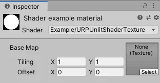
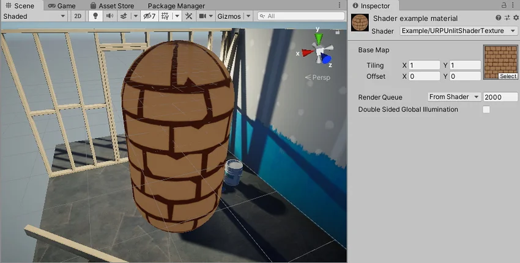

The Unity shader in this example draws a texture on the mesh.
Use the Unity shader source file from section URP unlit shader with color input and make the following changes to the ShaderLab code:
In the Properties block, replace the existing code with the _BaseMap property definition.
Properties
{
[MainTexture] _BaseMap("Base Map", 2D) = "white" {}
}
When you declare a texture property in the Properties block, Unity adds the _BaseMap property with the label Base Map to the Material, and adds the Tiling and the Offset controls.

When you declare a property with the [MainTexture] attribute, Unity uses this property as the main texture of the Material.
Note: For compatibility reasons, the
_MainTexproperty name is a reserved name. Unity uses a property with the name_MainTexas the main texture even it does not have the[MainTexture]attribute.
In struct Attributes and struct Varyings, add the uv variable for the UV coordinates on the texture:
float2 uv : TEXCOORD0;
Define the texture as a 2D texture and specify a sampler for it. Add the following lines before the CBUFFER block:
TEXTURE2D(_BaseMap);
SAMPLER(sampler_BaseMap);
The TEXTURE2D and the SAMPLER macros are defined in one of the files referenced in Core.hlsl.
For tiling and offset to work, it’s necessary to declare the texture property with the _ST suffix in the ‘CBUFFER’ block. The _ST suffix is necessary because some macros (for example, TRANSFORM_TEX) use it.
Note: To ensure that the Unity shader is SRP Batcher compatible, declare all Material properties inside a single
CBUFFERblock with the nameUnityPerMaterial. For more information on the SRP Batcher, refer to the documentation on the Scriptable Render Pipeline (SRP) Batcher.
CBUFFER_START(UnityPerMaterial)
float4 _BaseMap_ST;
CBUFFER_END
To apply the tiling and offset transformation, add the following line in the vertex shader:
OUT.uv = TRANSFORM_TEX(IN.uv, _BaseMap);
The TRANSFORM_TEX macro is defined in the Macros.hlsl file. The #include declaration contains a reference to that file.
In the fragment shader, use the SAMPLE_TEXTURE2D macro to sample the texture:
half4 frag(Varyings IN) : SV_Target
{
half4 color = SAMPLE_TEXTURE2D(_BaseMap, sampler_BaseMap, IN.uv);
return color;
}
Now you can select a texture in the Base Map field in the Inspector window. The shader draws that texture on the mesh.

Below is the complete ShaderLab code for this example.
// This shader draws a texture on the mesh.
Shader "Example/URPUnlitShaderTexture"
{
// The _BaseMap variable is visible in the Material's Inspector, as a field
// called Base Map.
Properties
{
[MainTexture] _BaseMap("Base Map", 2D) = "white" {}
}
SubShader
{
Tags { "RenderType" = "Opaque" "RenderPipeline" = "UniversalPipeline" }
Pass
{
HLSLPROGRAM
#pragma vertex vert
#pragma fragment frag
#include "Packages/com.unity.render-pipelines.universal/ShaderLibrary/Core.hlsl"
struct Attributes
{
float4 positionOS : POSITION;
// The uv variable contains the UV coordinate on the texture for the
// given vertex.
float2 uv : TEXCOORD0;
};
struct Varyings
{
float4 positionHCS : SV_POSITION;
// The uv variable contains the UV coordinate on the texture for the
// given vertex.
float2 uv : TEXCOORD0;
};
// This macro declares _BaseMap as a Texture2D object.
TEXTURE2D(_BaseMap);
// This macro declares the sampler for the _BaseMap texture.
SAMPLER(sampler_BaseMap);
CBUFFER_START(UnityPerMaterial)
// The following line declares the _BaseMap_ST variable, so that you
// can use the _BaseMap variable in the fragment shader. The _ST
// suffix is necessary for the tiling and offset function to work.
float4 _BaseMap_ST;
CBUFFER_END
Varyings vert(Attributes IN)
{
Varyings OUT;
OUT.positionHCS = TransformObjectToHClip(IN.positionOS.xyz);
// The TRANSFORM_TEX macro performs the tiling and offset
// transformation.
OUT.uv = TRANSFORM_TEX(IN.uv, _BaseMap);
return OUT;
}
half4 frag(Varyings IN) : SV_Target
{
// The SAMPLE_TEXTURE2D marco samples the texture with the given
// sampler.
half4 color = SAMPLE_TEXTURE2D(_BaseMap, sampler_BaseMap, IN.uv);
return color;
}
ENDHLSL
}
}
}
Section Visualizing normal vectors shows how to visualize normal vectors on the mesh.